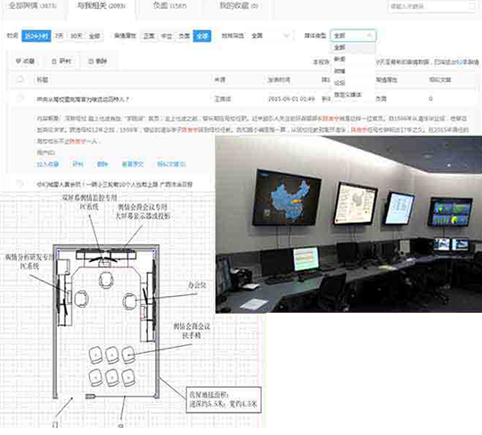

某话题在全网是否引起了关注度，关注量级与趋势如何
服务定位
互动未来品牌声誉管理，是基于百度大数据及互动未来品牌声誉系统建立的为企业级客户，通过对企业进行数字化品牌资产管理与提升，帮助客户实现品牌传播管理、舆情监测、危机公关。我们主要通过舆情大数据平台和系统化工具为企业提供传播管理、品牌舆情监测、品牌舆情处置、危机预警、危机公关、舆情修复等服务，增强企业在互联网时代品牌传播的有效性、安全性和美誉度。

依托百度
数据挖掘技术
海量自有数据
精准语义分析
稳定服务性能
依托百度
数据挖掘技术
海量自有数据
精准语义分析
稳定服务性能
产品亮点
全案营销
7*24小时高时效不间断监控
自任务建立起即实现不间断舆情监控，最快可达到分钟级数据更新。海量数据&专业可视化
拥有来自互联网搜索引擎、社交平台、电商平台等数据，引入独特“敏感”指标在竞品语义分析基础上更添精准。系统分析方法&专业可视化
声量、传播、情感、受众等多个维度全面分析舆情事件，引入专业视觉与可视化表现，分析专业、理解直观。- 数据采集 自主爬虫采集，百度数据推送，第三方数据合作 采集点覆盖国内外机房，多机房异步抓取保稳定
- 数据采集 自主爬虫采集，百度数据推送，第三方数据合作 采集点覆盖国内外机房，多机房异步抓取保稳定
- 数据采集 自主爬虫采集，百度数据推送，第三方数据合作 采集点覆盖国内外机房，多机房异步抓取保稳定
- 数据采集 自主爬虫采集，百度数据推送，第三方数据合作 采集点覆盖国内外机房，多机房异步抓取保稳定
- 数据采集 自主爬虫采集，百度数据推送，第三方数据合作 采集点覆盖国内外机房，多机房异步抓取保稳定
- 数据采集 自主爬虫采集，百度数据推送，第三方数据合作 采集点覆盖国内外机房，多机房异步抓取保稳定
核心技术
- 数据采集 自主爬虫采集，百度数据推送，第三方数据合作
- 文本挖掘 页面内容解析，垃圾信息过滤自动信息分类
- 全文搜索 数据极速结构化处理
- 深度学习 智能推荐引擎 账号行为深度学习
- 数据采集 自主爬虫采集，百度数据推送，第三方数据合作
- 数据采集 自主爬虫采集，百度数据推送，第三方数据合作
核心功能与应用
-
声量诊断
-
情感提炼
摩画网民情感倾向，提炼网民间对同一事物的关注面与侧重
-
传播分析
分析事件传播路径，识别传播节点，研判节点调性
-
 受众画像
受众画像对舆情参与受众画像、分析受众人群特征，有的放矢传播
品牌声誉管理客户价值
- 时效性 基于百度舆情将极大提升舆情挖掘效率，做到分钟级监控；小时级形成报告并迅速启动应对
- 数据完整 基于百度搜索、云服务的积累，拥有全国最完整的网络信息数据，做到舆情信息的完全覆盖不留死角
- 预警和趋势判断 百度基于尖端的大数据分析和云计 算能力，可准确预测舆情走向
服务项目
- 百度贴吧 针对企业品牌、产品、政府部门、企业政府领导的恶意攻击；未经证实的不实谣言等的帖文和回复;
- 百度知道 针对企业品牌、产品、政府部门、企业政府领导的恶意攻击；未经证实的不实谣言等的帖文和回复;
- 百度百科 针对企业品牌、产品、政府部门、企业政府领导不实百科词条描述;;
- 搜索活链快照 针对企业品牌、产品、政府部门、企业政府领导等在百度搜索结果中的第三方网站内容出现恶意攻击和不实谣言;;
- 搜索死链快照 针对企业品牌、政府部门、企业政府领导等在百度搜索结果中的第三方网站内容出现恶意攻击，但原链接已失效，但百度搜索有留存快照;;
- 搜索下拉框推荐 针对企业品牌、产品、政府部门、企业政府领导搜索词在搜索下拉推荐中生成了攻击性和谣言关键词;;
- 相关搜索 针对企业品牌、产品、政府部门、企业政府领导搜索词在相关搜索中生成了攻击性和谣言关键词;;
案例分享
司法系统案例 · 最高人民法院
客户背景
最高人民法院是中华人民共和国最高审判机关，负责审理各类案件，制定司法解释，监督地方各级人民法院和专门人民法院的审判工作，并依照法律确定的职责范围，管理全国法院的司法行政工作。
项目背景
在百度百科与最高人民法院进行内容合作、共建中国法院频道的基础上，百度舆情将为最高法提供全媒体舆情管理平台。。
项目背景
在百度百科与最高人民法院进行内容合作、共建中国法院频道的基础上，百度舆情将为最高法提供全媒体舆情管理平台。。
由于司法系统舆情内容庞杂，涉及敏感议题较多，因此对数据安全的需求更为迫切。同时，客户希望能够统筹舆情监测、研判会商、应急处置、结果汇报、新闻发布等工作流程需求，兼顾舆情工作的及时性、保密性需要，建立完整的舆情解决方案。
数据安全管理
以数据加密和权限管理为核心，结合了身份认证、日志审计、文档备份、外发管理等功能，在基于用户需求的基础上，配合各种安全策略，源头上实现了数据保护，有效实现网络边界管理。
日常舆情监测
利用百度舆情平台，对全网信息进行抓取、监测和分析；利用多屏幕终端系统，工作人员可不间断的监控多个渠道（新闻、微博、论坛、微信等）的舆情信息。
舆情会商
利用百度所提供的舆情分析数据，结合大屏幕显示设备、电话会议调度系统等，帮助客户快速高效的组织舆情会商会议，协调跨部门、跨地区的舆情工作会议。
舆情通报
利用百度舆情分析平台、投影屏幕等设备，帮助客户快速高效的组织舆情通报、成果汇报、新闻发布等多种会议。
突发事件应急
利用舆情监控系统、显示系统、电话会议调度系统等，作为舆情突发事件应急处置的办公平台，24小时监控、布署、应对舆情事件。
客户收益

更快响应客户需求，提升客户满意度。
客户期望的舆情应对处置垂直化管理目标有望实现

由于司法系统舆情内容庞杂，涉及敏感议题较多，因此对数据安全的需求更为迫切。同时，客户希望能够统筹舆情监测、研判会商、应急处置、结果汇报、新闻发布等工作流程需求，兼顾舆情工作的及时性、保密性需要，建立完整的舆情解决方案。
数据安全管理
以数据加密和权限管理为核心，结合了身份认证、日志审计、文档备份、外发管理等功能，在基于用户需求的基础上，配合各种安全策略，源头上实现了数据保护，有效实现网络边界管理。
日常舆情监测
利用百度舆情平台，对全网信息进行抓取、监测和分析；利用多屏幕终端系统，工作人员可不间断的监控多个渠道（新闻、微博、论坛、微信等）的舆情信息。
舆情会商
利用百度所提供的舆情分析数据，结合大屏幕显示设备、电话会议调度系统等，帮助客户快速高效的组织舆情会商会议，协调跨部门、跨地区的舆情工作会议。
舆情通报
利用百度舆情分析平台、投影屏幕等设备，帮助客户快速高效的组织舆情通报、成果汇报、新闻发布等多种会议。
突发事件应急
利用舆情监控系统、显示系统、电话会议调度系统等，作为舆情突发事件应急处置的办公平台，24小时监控、布署、应对舆情事件。
客户收益
更快响应客户需求，提升客户满意度。
客户期望的舆情应对处置垂直化管理目标有望实现